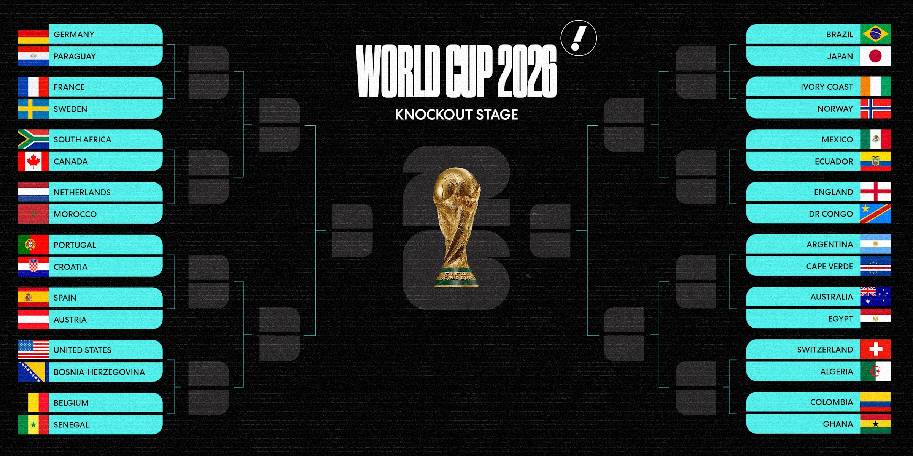
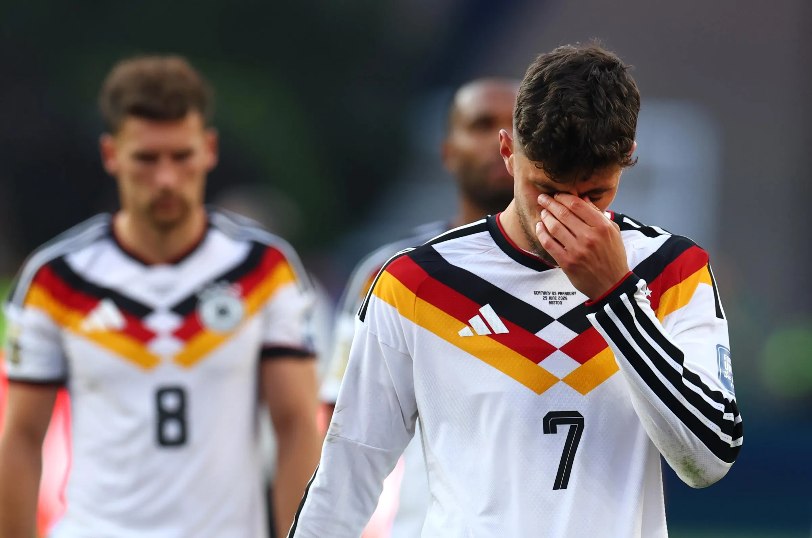
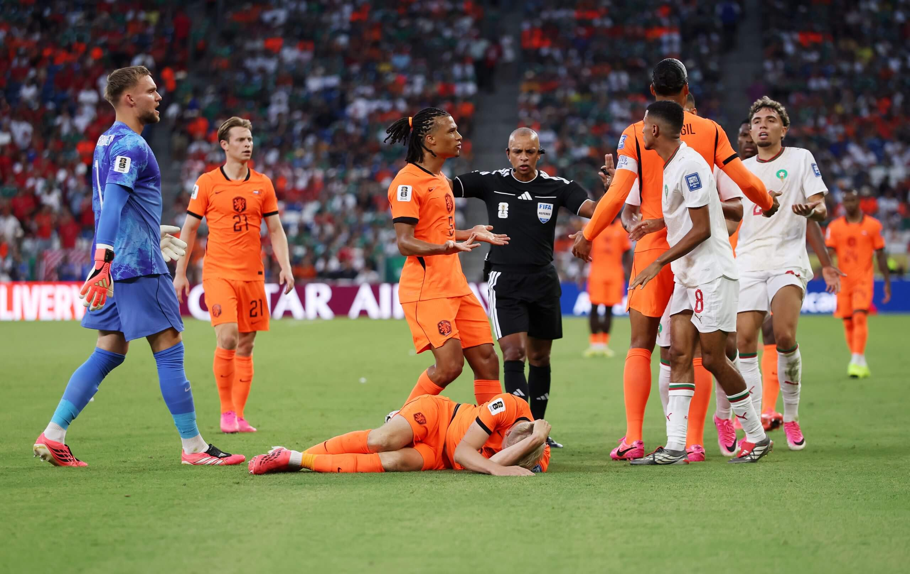
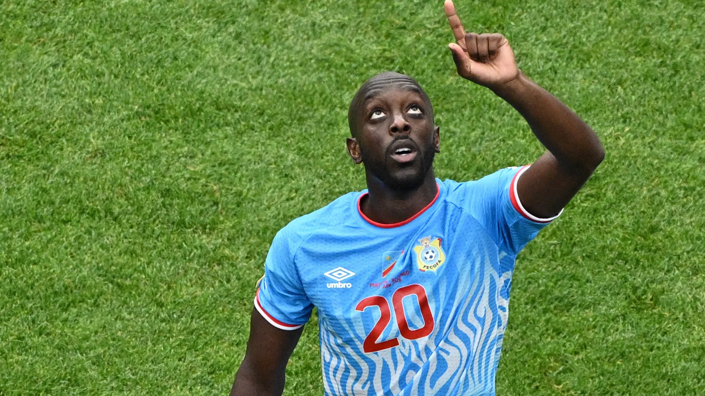
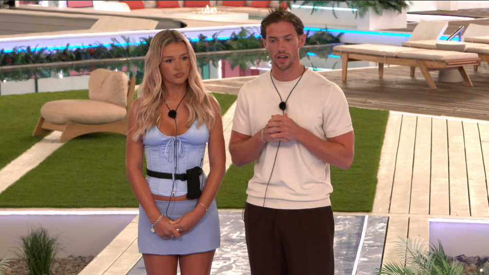
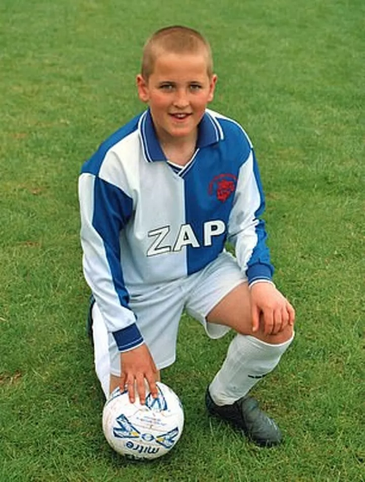
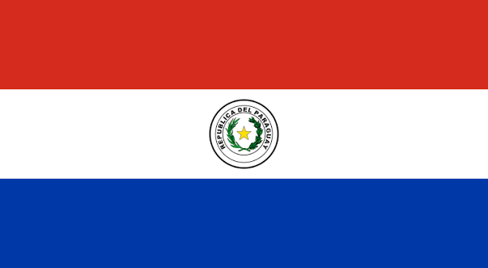

Welcome to the Business End
The group stage is over, the calculators have been put away, and half the office has suddenly become an expert on goal difference, fair play points, and why their sweepstake team was actually “unlucky” rather than just bad.
Please read responsibly, preferably while pretending to check emails.
🎵 Song of the Week
This week’s pick: Don’t Look Back in Anger — Oasis
Dedicated to everyone whose sweepstake team has already been eliminated and is now pretending they “never cared about the money anyway”.
🗞️ Week 3 in One Breath
The final stretch of the group stage somehow managed to feel like both a football tournament and an Excel exam. Some teams cruised through comfortably, others scraped through by the skin of their teeth, and several spent the final few minutes staring nervously at live tables while commentators desperately explained goal difference rules nobody had thought about.
Across the week we got dramatic late winners, heartbreaking eliminations, surprise qualification stories, and the annual reminder that international football is basically controlled chaos disguised as sporting competition. Every match seemed to affect about six other teams at once, which made watching the final round of fixtures feel less like football and more like trying to follow a group project with too many people involved.
By the end of it all, some nations were celebrating historic qualification, others were left wondering how they managed to go home despite “technically not losing”, and several fanbases convinced themselves that the referees, the schedule, the weather, or FIFA itself had personally targeted them.
The knockout stage is now officially underway, here are the games you can look forward to.

🐐 Can he be stopped?

Anyone locking horns with the GOAT has a huge mountain to climb. Make that 19 World Cup goals to his name. The first ever player to score in seven consecutive WC matches. Haters clowned him for missing the most penalties, so he decided to give them a free kick instead. Now the player with the most goals outside the box in this tournament's history.
If you can't tell by now. I love this guy.
👋German Giants Gone

Paraguay did not just beat Germany, they outlasted, out-nerved, and out-kicked them. After Julio Enciso’s opener and Kai Havertz’s reply left the tie level at 1-1, Orlando Gill slammed the door in the shootout and José Canale hammered home the upset.
For Germany, it was domination without destination. For Paraguay, it was pure knockout poetry: compact, composed, and cool enough to make history.
And above all, it was a brutal reminder that underdogs are only dismissed by those who mistake reputation for destiny. In football, belief can be as dangerous as brilliance, and Paraguay carried both. They arrived as outsiders, but left as authors of the night, proving that the teams most easily doubted are often the ones bold enough to break the script.
⚔️ The Netherlands VS Morocco

Morocco walked into a match framed as a test and turned it into a warning. This was supposed to be the heavyweight Round of 32 clash, two top-10 teams, Dutch pedigree against Moroccan momentum. But four years after their semifinal run in Qatar, the Atlas Lions showed they are no longer football’s surprise package, they are its recurring threat.
Gakpo gave the Netherlands the lead, Diop ripped it away, and Bounou plus Saibari settled it from the spot. Another penalty win, another European power sent home, another reminder that doubt is wasted on Morocco.
🔥 Other Stories from the Knockout Stage in case you care
Canada make history
Canada recorded their first-ever World Cup knockout-stage victory, defeating South Africa 1-0. Stephen Eustaquio scored a dramatic late winner, sending the co-hosts into the Round of 16 for the first time.
Belgium’s incredible comeback
Belgium came back from 2-0 down against Senegal, scoring twice late to force extra time before Youri Tielemans converted a dramatic 125th-minute penalty for a 3-2 victory.
USA advance despite red card drama
The United States defeated Bosnia & Herzegovina 2-0. Folarin Balogun scored before being sent off, and Malik Tillman sealed the victory as the Americans earned their first World Cup knockout win since 2002.
Haaland delivers again
Erling Haaland scored the decisive goal as Norway beat Ivory Coast 2-1, securing the country’s first-ever World Cup knockout-stage win.
📋 Round of 32 Results So Far
| Match | Result |
|---|---|
| Canada vs South Africa | Canada 1-0 South Africa |
| Germany vs Paraguay | 1-1 (Paraguay won 4-3 on pens) |
| Netherlands vs Morocco | 1-1 (Morocco won 3-2 on pens) |
| Brazil vs Japan | Brazil 2-1 Japan |
| France vs Sweden | France 3-0 Sweden |
| Ivory Coast vs Norway | Norway 2-1 Ivory Coast |
| Mexico vs Ecuador | Mexico 2-0 Ecuador |
| England vs DR Congo | England 2-1 DR Congo |
| USA vs Bosnia & Herzegovina | USA 2-0 Bosnia & Herzegovina |
| Belgium vs Senegal | Belgium 3-2 Senegal (AET) |
✅ Confirmed Round of 16 Matchups
- Canada vs Morocco
- France vs Paraguay
- Brazil vs Norway
- Mexico vs England
- USA vs Belgium
🔦 Nation Spotlight: DR Congo

Famous Footballer: Yoane Wissa
National Dish: Poulet à la Moambé — chicken in a rich palm-nut sauce.
Weird Fact: DR Congo is home to the Congo River, one of the world’s deepest rivers.
Spirit of Choice: Lotoko — a strong local spirit. Approach with respect and a clear calendar.
World Cup Chances: ⬛⬛⬛⬛⬛
I think it's safe to say we all wanted Congo to win yesterday. It was painful removing their World Cup Chances stars.
🏝️ The Fire Pit

Thank GOD our girl Charleen made it into the main villa. Ngl, Casa Amor totally underused her - all that hype for about 12 seconds of screen time. That recoupling though? My stomach was in knots watching her stand there beside Kav while Jasmine, Mica and the girls were firing questions from every angle. Meanwhile Charleen was just trying to exist. 😭 Kav may have lost the plot, but Charleen handled herself like an absolute queen. Lowkey, once the dust settles I actually think the villa girls will really like her. The vibes are there. And can we discuss Julia's entrance? The girl walked back into the villa like she was closing Paris Fashion Week. The confidence. The strut. The aura. Not saying she looked like Yas-GPT, but I'm also not not saying it. 💅✨
Biggest loser of the week: Kav. Biggest winner of the week: Charleen's composure under fire. Most iconic moment: Julia serving runway while everyone else's relationships were actively falling apart. 🔥👠
The Cruellest Exit
Iran somehow managed to get knocked out of the World Cup without losing a signle game. Three matches, three draws, zero defeats - and still on the flight home.
They were minutes away from sneaking into the knockouts until Austria's 96th minute equaliser against Algeria flipped the third-place table and sent Iran out instead.
Going unbeaten and still being and still being eliminated feels less like football and more like failing a group project despite doing all your own work. Brutal.
🧠 Trivia
- Who is the famous footballer pictured here? (*First name and Surname Required*)
- Which World Cup team's flag is pictured here?
- What is the name of Charleen Murphy's podcast?
- All three co-host nations of the FIFA World Cup 2026 have reached the knockout stage?


Submit your answers here.
We have upset some team members due to our wording... here is a full rules & regulations just for them!
Please answer with integrity, honesty, and without immediately asking ChatPwC. Difficult, we know.
⏱️ Full-Time Whistle
That’s Week 3 wrapped. The group stage is gone, the knockouts are here, and several sweepstake dreams are now surviving only through mathematical denial.
Send feedback here.